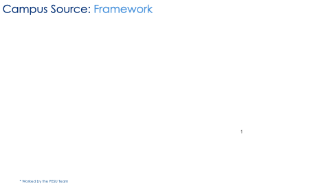

Campus Source
GitHub Enterprise for PES University

×
Campus Source is PES University's centralized GitHub Enterprise platform that enables secure code collaboration, version control, and project management across all academic programs, research initiatives, and institutional projects. Built on GitHub's enterprise-grade infrastructure, it provides a unified environment for students, faculty, and staff to develop, share, and maintain code repositories.
Campus Source Platform Overview
Discover how Campus Source transforms collaborative development at PES University
Interactive Framework Demo

Experience the Campus Source framework and collaborative development environment
How to obtain
Accessing
Log in and set up an account: https://github.com/pestechnology
Using
Organization Structure

Campus Source follows a hierarchical team structure that mirrors PES University's academic organization:
- pestechnology Organization: Central GitHub Enterprise organization for all PES projects
- Program Teams: Department-based teams (btech-cse, btech-aiml, btech-ece)
- Staff Teams: Faculty (Professors) and Teaching Assistants (TAs)
- Repository Management: Standardized naming convention (PESU-ProjectName-ProjectId)
- Access Control: Team-based permissions and collaborative workflows